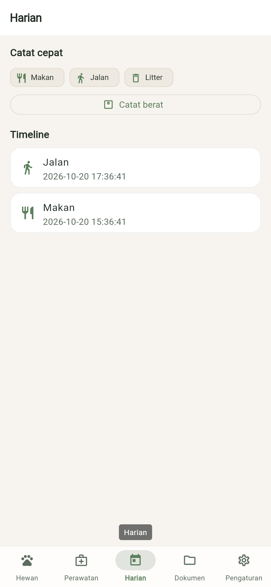
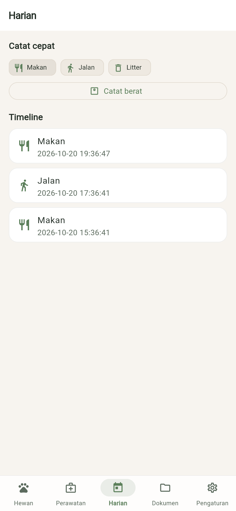
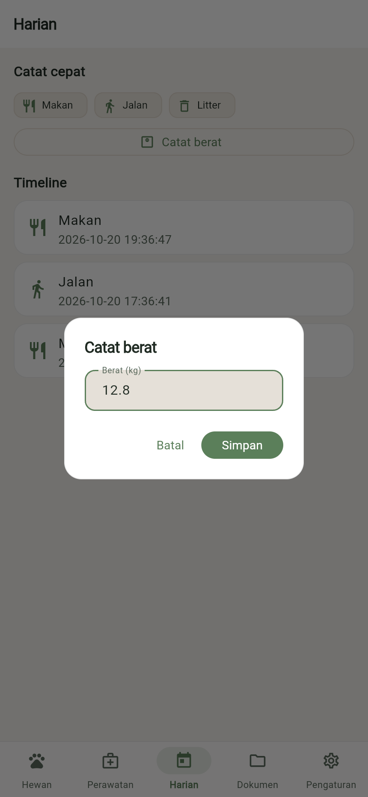
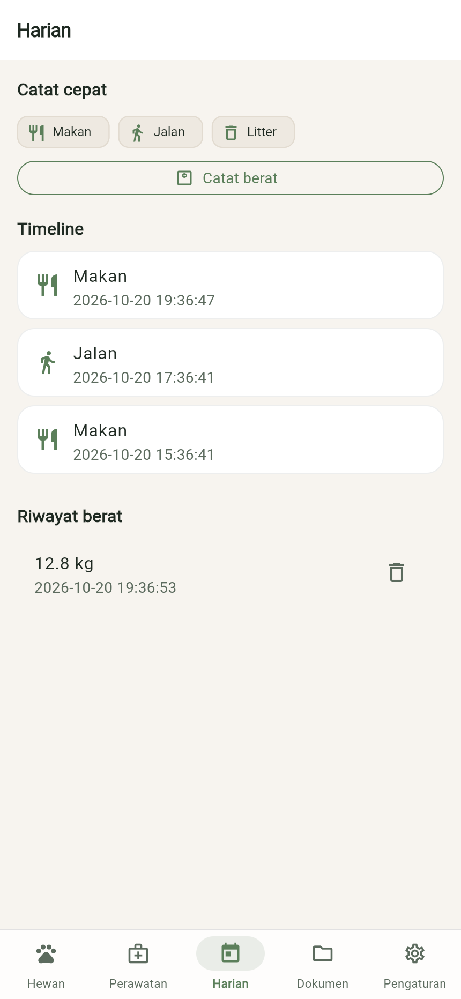

BAST petgo · BAST-FLOW-DAY-01
Mencatat log harian dan berat
FLOW-DAY-01ROL-001MOD-003EP-002US-004US-005FR-004
Pemilik mencatat makan/jalan/litter dengan satu ketukan dan menimbang berat hewan.
Langkah 1: Buka Harian
Ketuk tab Harian: Catat cepat dan Timeline aktivitas hewan aktif.

Langkah 2: Catat cepat
Ketuk Makan, Jalan, atau Litter; aktivitas langsung masuk ke Timeline.

Langkah 3: Catat berat
Ketuk Catat berat dan isi Berat (kg) (0–500). Berat terbaru memperbarui profil hewan.

Langkah 4: Berat tersimpan
Setelah Simpan, berat tercatat di riwayat dan profil hewan aktif.

Hasil uji
| TC | Jenis | Lapis | Skenario | Hasil |
|---|---|---|---|---|
FLOW-DAY-01-T01 | positive | unit | log makan dan timbang berat memperbarui berat profil hewan aktif | pass |
FLOW-DAY-01-T02 | negative | unit | berat 0 atau di atas 500 kg ditolak | pass |
FLOW-DAY-01-T03 | edge | unit | riwayat berat terurut terbaru meski dicatat tidak berurutan | pass |
FLOW-DAY-01-T04 | corner | unit | timbang hewan yang tidak aktif tidak mengubah profil hewan aktif | pass |
Direkam terhadap flutter build web (lokal) oleh FLOW-DAY-01-T01.